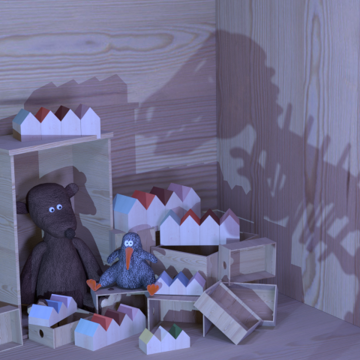
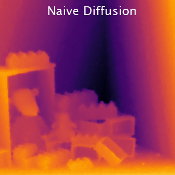
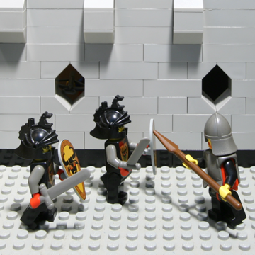

Depth estimation tries to obtain 3D scene geometry from low-dimensional data like 2D images. This is a vital operation in computer vision and any general solution must preserve all depth information of potential relevance to support higher-level tasks. For scenes with well-defined depth, this work shows that multi-view edges can encode all relevant information---that multi-view edges are complete. For this, we follow Elder's complementary work on the completeness of 2D edges for image reconstruction. We deploy an image-space geometric representation: an encoding of multi-view scene edges as constraints and a diffusion reconstruction method for inverting this code into depth maps. Due to inaccurate constraints, diffusion-based methods have previously underperformed against deep learning methods; however, we will reassess the value of diffusion-based methods and show their competitiveness without requiring training data. To begin, we work with structured light fields and Epipolar Plane Images (EPIs). EPIs present high-gradient edges in the angular domain: with correct processing, EPIs provide depth constraints with accurate occlusion boundaries and view consistency. Then, we present a differentiable representation form that allows the constraints and the diffusion reconstruction to be optimized in an unsupervised way via a multi-view reconstruction loss. This is based around point splatting via radiative transport, and extends to unstructured multi-view images. We evaluate our reconstructions for accuracy, occlusion handling, view consistency, and sparsity to show that they retain the geometric information required for higher-level tasks.
This research was presented as one of the keynote talks in the CVPR 2023 Workshop on Light Fields for Computer Vision (LFNAT).
We thank the reviewers for their detailed feedback. James Tompkin thanks NSF CAREER-2144956 and Cognex, Numair Khan thanks an Andy van Dam PhD Fellowship, and Min H. Kim acknowledges the support of Korea NRF grant (2019R1A2C3007229).